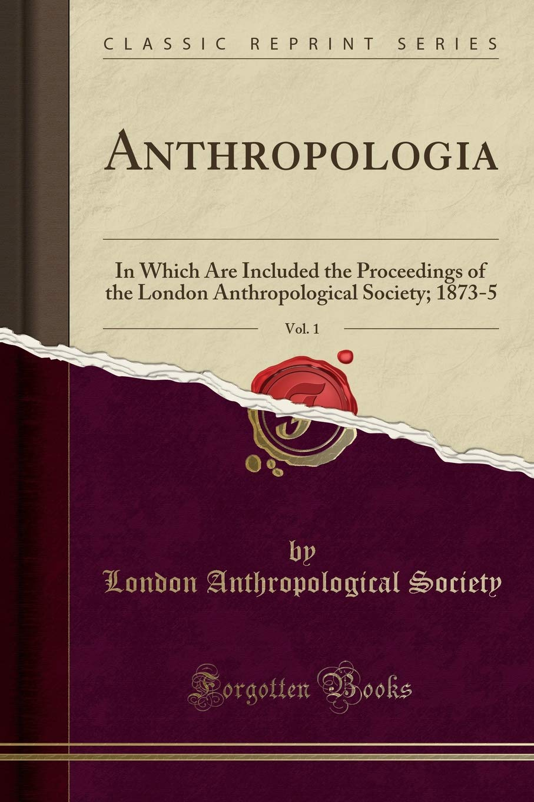
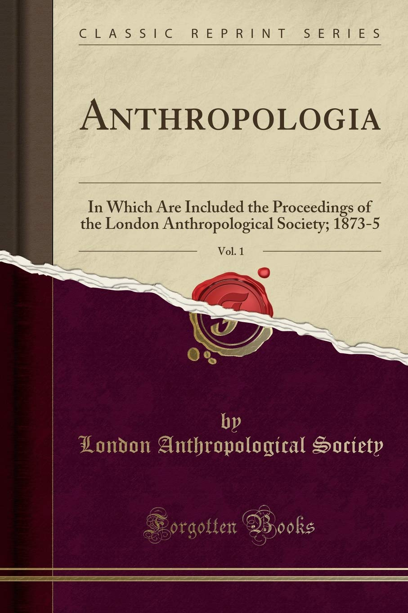
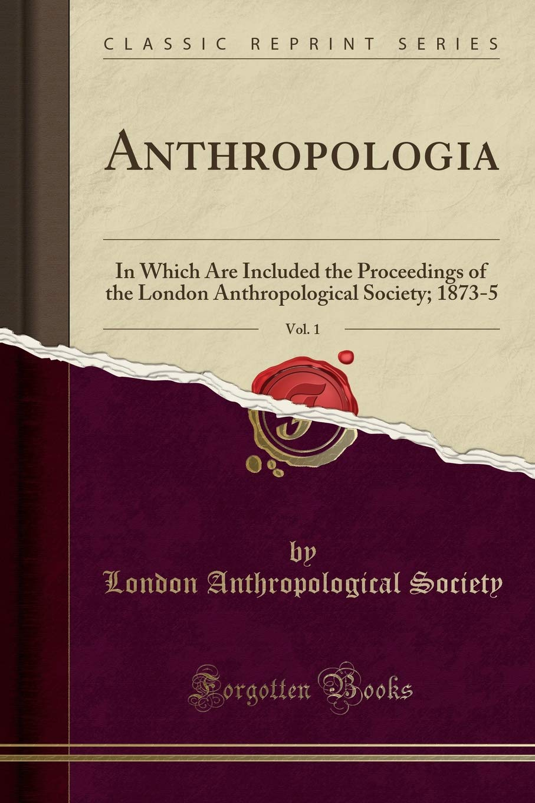
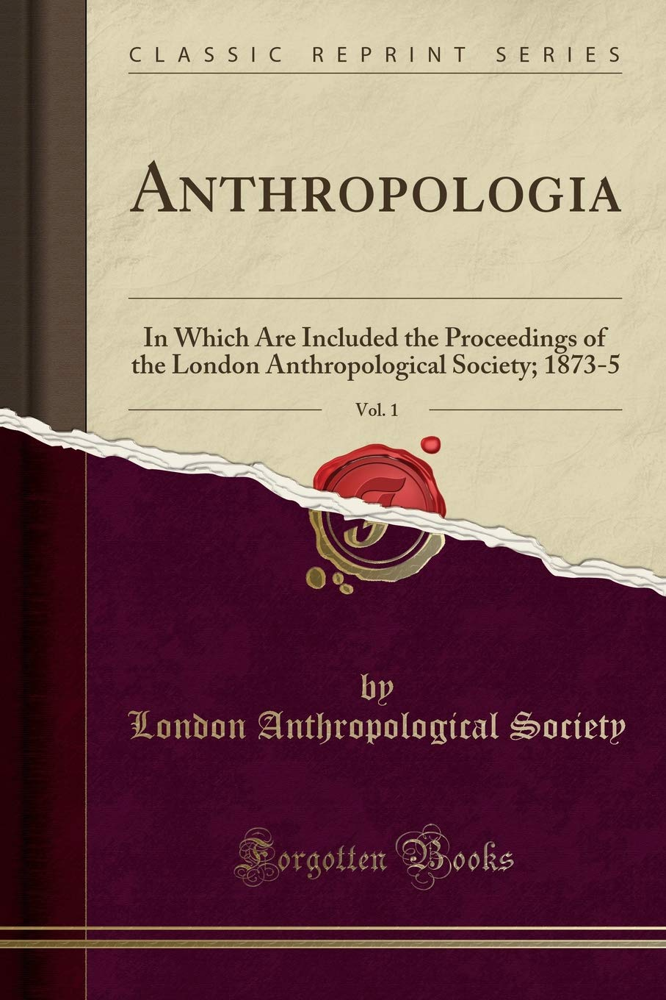

Hobbies


 

 

Video games are a great source of stress for me, I can spend hours depending on the game I play. I like almost all games, whether they are science fiction, war, logic or sports games. My top favorite games:
- FIFA
- Grand Theft Auto
- Dr. Ryuta Kawashima
- Call Of Duty
- Forza
Movies have the same effect as video games, as I said before, it is also a stress, for movies I am more categorical, I like more reviews and a less broad opinion on the types of films and more fussy, indeed if the scenario is poorly constructed and where the catharsis is not present, I will find the film rather uninteresting, my top favorite films :
- Interstellar
- Inception
- Tenet
- The dark Night Rises
I love history, learning about the scenarios that took place in the past until today, how certain historical misdeeds could have happened.
The history of the different peoples who populate the earth today and who no longer populate it for some, the knowledge that was transmitted to us thanks to their science and the technical progress that we owe them today, the culture that they practiced, their way of life is for me something very interesting and that I appreciate reading or learning orally.
I like to read, all register, as soon as a book is at hand I can read it and enjoy reading it.